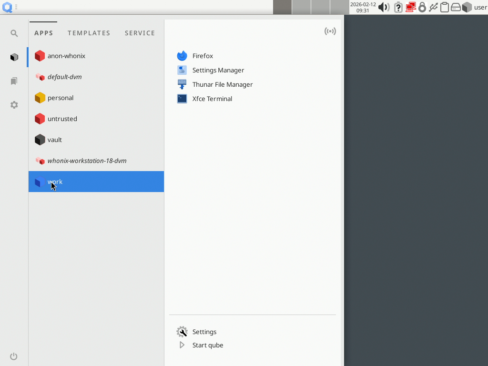
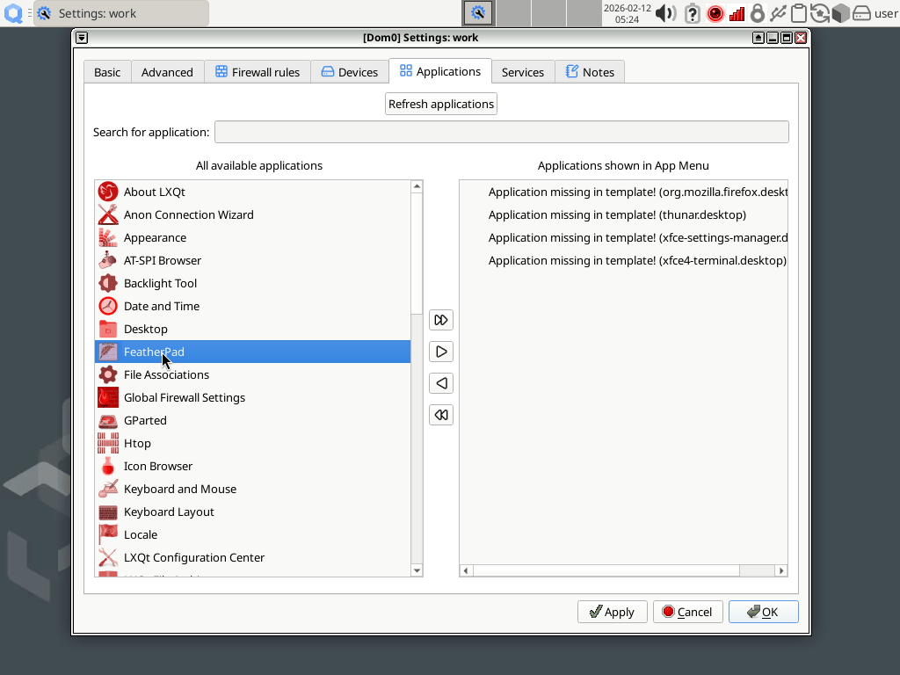

App menu shortcut troubleshooting
For ease of use Qubes aggregates shortcuts to applications that are installed in app qubes and shows them in one application menu (aka “app menu” or “start menu”) in dom0. Clicking on such shortcut runs the assigned application in its app qube.
{kind=link}

How-to add a shortcut
With the graphical user interface
To make applications newly installed show up in the menu, you can use the qube’s Settings. Under the Applications tab, use the Refresh Applications button. Linux qubes do this automatically, if the Settings are opened after the installation of the package.
{kind=link}

After that, use the directional buttons (>, >>, < or <<) to customize which applications are shown, by moving them to the Applications shown in App Menu part (on the right side). Use the Apply (or Ok) button to see the changes in the app menu.
With the command-line interface
To update the list of available applications, use the qvm-sync-appmenus command in dom0, replacing <QUBE_NAME> by the qube name:
[user@dom0] $ qvm-sync-appmenus <QUBE_NAME>
When using the Refresh Applications button in a qube’s settings, the command qvm-sync-appmenus is used at least one time. When refreshing an AppVM application, it is also run against the template. So the console equivalent of clicking the Refresh Applications button is the following (always in dom0):
[user@dom0] $ qvm-sync-appmenus <APPVM_NAME>
[user@dom0] $ qvm-sync-appmenus <TEMPLATE_NAME>
In dom0, the qvm-appmenus tool allows the user to see the list of available applications (unstable feature), the whitelist of currently show application (unstable feature) and to change this list:
[user@dom0] $ qvm-appmenus --set-whitelist <FILE_PATH> <QUBE_NAME>
To change the whitelist shown in app menu, you need to provide a list of the desktop entries. Each line contains a desktop entry name, with its .desktop extension, like this:
qubes-open-file-manager.desktop
qubes-run-terminal.desktop
[...]
You can replace the file path by a single hyphen (-) to read it from standard input.
What if my application has not been automatically included in the list of available apps?
Missing desktop entry
Sometimes applications may not have included a .desktop file and may not be detected by qvm-sync-appmenus. Other times, you may want to make a web shortcut available from the Qubes start menu.
You can manually create new entries in the “available applications” list of shortcuts for all app qubes based on a template. To do this:
Open a terminal window to the template.
Create a custom
.desktopfile in/usr/share/applications(you may need to first create the subdirectory). Look in/usr/share/applicationsfor existing examples, or see the full .desktop file format specification. It will be something like:[Desktop Entry] Type=Application Name=VueScan Exec=vuescan
Follow the instructions in How-to add a shortcut
If you only want to create a shortcut for a single app qube:
Open a terminal window to the template.
Create a custom
.desktopfile in either~/.local/share/applicationsor/usr/local/share/applications(you may need to first create the subdirectory). See the previous instructions about the desktop entry format.Follow the instructions in How-to add a shortcut
To add a custom menu entry instead:
Open a terminal window to Dom0.
Create a custom
.desktopfile in~/.local/share/applications. Look in the same directory for existing examples, or see the full file specification. You may useqvm-runinside the.desktopfile; see Behind the scenes for more details.Edit the
~/.config/menus/applications-merged/<vmname>-vm.menufile for the app qube.Add a custom menu entry referring to your newly created
.desktopfile.<Menu> <Name>Webmail</Name> <Include> <Filename>custom.desktop</Filename> </Include> </Menu>
Unavailable desktop entry
If you created a desktop entry but it doesn’t show up, there are some steps to run inside the qube, to identify the problem:
make sure the name is a valid name (only ASCII letters, numbers, hyphens and point)
if this program is available, run
desktop-file-validate <DESKTOP_FILE_PATH>run it through
gtk-launchrun
/etc/qubes-rpc/qubes.GetAppmenusand check that your desktop entry is listed in the output
What about applications in disposables?
See Add programs to the app menu in Disposable customization.
What if a removed application is still in the app menu?
First, try this in dom0:
[user@dom0] $ qvm-appmenus --update --force <QUBE_NAME>
You can also try:
[user@dom0] $ qvm-appmenus --remove <QUBE_NAME>
If that doesn’t work, you can manually modify the files in ~/.local/share/applications/ or in ~/.local/share/qubes-appmenus/<QUBE_NAME>.
For example, suppose you’ve deleted my-old-vm, but there is a leftover Application Menu shortcut, and you find a related file in ~/.local/share/applications/, try to delete it. The hyphens in the name of the qube are replaced by an underscore and the letter, so instead of looking for my-old-vm, try my_dold_dvm.
What if my application is shown in app menu, but doesn't run anything?
First, check in the corresponding .desktop file in ~/.local/share/qubes-appmenus/<QUBE_NAME>/, inside dom0.
The line starting with Exec= points out the exact command run by dom0 to start the application. It should be something like:
Exec=qvm-run -q -a --service -- <QUBE_NAME> qubes.StartApp+<APPLICATION_NAME>
It’s possible to run the command to check the output, by copying this line without Exec=, and remove -q (quiet option). But it could be more useful to run it in the qube, with the qubes.StartApp service:
[user@any-qube] $ /etc/qubes-rpc/qubes.StartApp <APPLICATION_NAME>
Behind the scenes
qvm-sync-appmenus works by invoking the GetAppMenus Qubes service in the target domain. This service enumerates applications installed in that qube and sends formatted info back to dom0 which creates .desktop files in the app qube/template directory of dom0.
For Linux qubes the service script is in
/etc/qubes-rpc/qubes.GetAppMenus`. In Windows it’s a PowerShell script located inc:Program FilesInvisible Things LabQubes OS Windows Toolsqubes-rpc-servicesget-appmenus.ps1by default.
The list of installed applications for each app qube is stored in dom0’s ~/.local/share/qubes-appmenus/<QUBE_NAME>/apps.templates. Each menu entry is a file that follows the .desktop file format with some wildcards (%VMNAME%, %VMDIR%). Applications selected to appear in the menu are stored in ~/.local/share/qubes-appmenus/<QUBE_NAME>/apps and in ~/.local/share/applications/.
The whitelist given to qvm-appmenu --set-whitelist is stored as a feature called menu-items, where each desktop entry is separated by a space.
Actual command lines for the menu shortcuts involve the qvm-run command which starts a process in another domain. Examples:
$ qvm-run -q -a --service -- %VMNAME% qubes.StartApp+firefox
$ qvm-run -q -a --service -- %VMNAME% qubes.StartApp+7-Zip-7-Zip_File_Manager
Note that you can create a shortcut that points to a .desktop file in your app qube with e.g.:
$ qvm-run -q -a --service -- personal qubes.StartApp+firefox
While this works well for standard applications, creating a menu entry for Windows applications running under wine may need an additional step in order to establish the necessary environment in wine. Installing software under wine will create the needed .desktop file in the target Linux qube in the directory ~/.local/share/applications/wine/Programs/ or a subdirectory thereof, depending on the Windows menu structure seen under wine. If the name of this file contains spaces, it will not be found, because the qvm-run command is falsely seen as terminating at this space. The solution is to remove these spaces by renaming the .desktop file accordingly, e.g. by renaming Microsoft Excel.desktop to Excel.desktop. Refreshing the menu structure will then build working menu entries.
備註
Applications installed under wine are installed in AppVMs, not in the template on which these AppVMs are based, as the file structure used by wine is stored under ~/.wine, which is part of the persistent data of the AppVM and not inherited from its template.